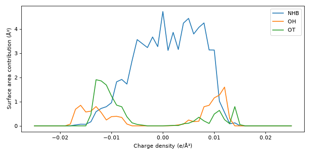
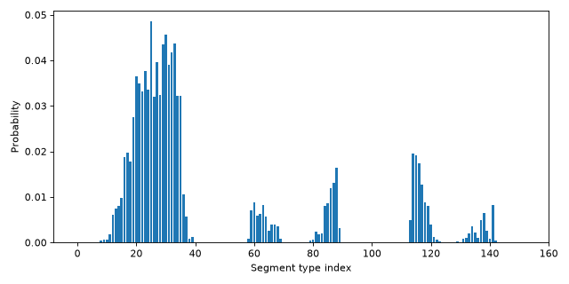

Component#
- class cosmolayer.cosmosac.Component(cosmo_string, *, min_sigma=-0.025, max_sigma=0.025, num_points=51, averaging_radius=np.float64(1.5191269449366247), f_decay=3.57, sigma_0=0.007, merge_profiles=False)[source]#
Molecular component for the COSMO-SAC activity coefficient model.
- Parameters:
cosmo_string (str) – Contents of a COSMO output file from quantum mechanical calculations.
- Keyword Arguments:
min_sigma (float, optional) – Minimum screening charge density in e/Ų. Default is -0.025 e/Ų.
max_sigma (float, optional) – Maximum screening charge density in e/Ų. Default is 0.025 e/Ų.
num_points (int, optional) – Number of discrete points in the sigma profile. Default is 51.
averaging_radius (float, optional) – Effective radius for distance-weighted sigma averaging in Å. Default is √(7.25 / π) Å [1].
f_decay (float, optional) – Decay factor for exponential distance weighting in the sigma averaging procedure. Default is 3.57 [1].
sigma_0 (float or None, optional) – Standard deviation of the Gaussian probability of a segment to form a hydrogen bond in e/Ų. Set to
Noneto disable hydrogen-bond splitting (all surface area is assigned to the NHB class). Default is 0.007 e/Ų [1].merge_profiles (bool, optional) – Whether to merge segment groups (NHB, OH, OT) into a single profile when accessing
probabilitiesandsigma_profile. Default is False.
- Raises:
ValueError – If the COSMO string is not in any supported format.
ValueError – If averaged charge densities fall outside the specified sigma range.
Examples
>>> import numpy as np >>> from importlib.resources import files >>> from cosmolayer.cosmosac import Component >>> path = files("cosmolayer.data") / "C=C(N)O.cosmo" >>> component = Component(path.read_text()) >>> component.area 97.34554... >>> component.volume 80.07160...
When
merge_profilesis True,sigma_profileis a single merged profile:>>> component = Component(path.read_text(), merge_profiles=True) >>> sigma_profile = component.sigma_profile >>> sigma_profile.shape (51,) >>> print(sum(sigma_profile)) 97.34554...
When
merge_profilesis False,sigma_profileis stacked (NHB, OH, OT), shape (3, num_points):>>> component = Component(path.read_text(), merge_profiles=False) >>> stacked = component.sigma_profile >>> stacked.shape (3, 51) >>> from cosmolayer.cosmosac.segment_groups import SEGMENT_GROUPS >>> for i, s in enumerate(SEGMENT_GROUPS): ... print(s, sum(stacked[i])) NHB 72.31802... OH 12.25732... OT 12.77019...
Plotting the sigma profiles (stacked,
merge_profilesis False):>>> from importlib.resources import files >>> from cosmolayer.cosmosac import Component >>> from cosmolayer.cosmosac.segment_groups import SEGMENT_GROUPS >>> from matplotlib import pyplot as plt >>> path = files("cosmolayer.data") / "C=C(N)O.cosmo" >>> component = Component(path.read_text(), merge_profiles=False) >>> fig, ax = plt.subplots(figsize=(8, 4)) >>> grid = component.sigma_grid >>> for i, label in enumerate(SEGMENT_GROUPS): ... _ = ax.plot(grid, component.sigma_profile[i], label=label) >>> _ = ax.set_xlabel("Charge density (e/Ų)") >>> _ = ax.set_ylabel("Surface area contribution (Ų)") >>> _ = ax.legend() >>> fig.tight_layout()
(
Source code,png,hires.png,pdf)
Plotting the segment-type probabilities:
>>> from importlib.resources import files >>> from cosmolayer.cosmosac import Component >>> from matplotlib import pyplot as plt >>> path = files("cosmolayer.data") / "C=C(N)O.cosmo" >>> component = Component(path.read_text()) >>> fig, ax = plt.subplots(figsize=(8, 4)) >>> p = component.probabilities >>> _ = ax.bar(range(len(p)), p) >>> _ = ax.set_xlabel("Segment type index") >>> _ = ax.set_ylabel("Probability") >>> fig.tight_layout()
(
Source code,png,hires.png,pdf)
Attributes
- area#
Cavity surface area of the molecule in Ų.
Sum of the areas of all segments from the COSMO calculation.
- atom_data#
Atom data from the parsed COSMO file.
DataFrame columns:
id(atom identifier),x,y,z(Cartesian coordinates in Å),element(chemical symbol).- Returns:
One row per atom.
- Return type:
pd.DataFrame
Examples
>>> from importlib.resources import files >>> from cosmolayer.cosmosac import Component >>> path = files("cosmolayer.data") / "C=C(N)O.cosmo" >>> component = Component(path.read_text()) >>> component.atom_data id x y z element 0 C1 -1.4... -0.2... 0.0... C 1 C2 -0.0... 0.0... 0.0... C 2 N1 0.9... -0.9... -0.0... N ... 8 H5 1.1... 1.3... -0.4... H
- bonds#
Bonds between atoms, inferred from interatomic distances.
Examples
>>> from importlib.resources import files >>> from cosmolayer.cosmosac import Component >>> path = files("cosmolayer.data") / "C=C(N)O.cosmo" >>> component = Component(path.read_text()) >>> component.bonds [(0, 1), (0, 4), (0, 5), ... (2, 7), (3, 8)]
- cosmo_format#
COSMO file format that was parsed.
Either “TURBOMOLE” or “DMol-3”.
Examples
>>> from importlib.resources import files >>> from cosmolayer.cosmosac import Component >>> path = files("cosmolayer.data") / "C=C(N)O.cosmo" >>> component = Component.from_file(path) >>> component.cosmo_format 'TURBOMOLE' >>> path = files("cosmolayer.data") / "NCCO.cosmo" >>> component = Component.from_file(path) >>> component.cosmo_format 'DMol-3'
- merge_profiles#
Whether segment groups (NHB, OH, OT) are merged for
sigma_profileandprobabilities.- Return type:
- probabilities#
Normalized segment-type probability distribution (sigma profile / area).
Segment types are defined by hydrogen bonding class (NHB, OH, OT) and averaged charge density. Shape is
(num_points,)ifmerge_profilesis True, otherwise(3*num_points,).- Returns:
Probabilities summing to 1.0.
- Return type:
np.ndarray
Examples
>>> import numpy as np >>> from importlib.resources import files >>> from cosmolayer.cosmosac import Component >>> cosmo_string = (files("cosmolayer.data") / "C=C(N)O.cosmo").read_text() >>> component = Component(cosmo_string, merge_profiles=True) >>> probabilities = component.probabilities >>> probabilities.shape (51,) >>> bool(np.all(probabilities <= 1)) True >>> bool(np.isclose(probabilities.sum(), 1.0)) True >>> component = Component(cosmo_string, merge_profiles=False) >>> probabilities_full = component.probabilities >>> probabilities_full.shape (153,) >>> bool(np.isclose(probabilities_full.sum(), 1.0)) True
- segment_data#
Segment (surface tile) data from the COSMO calculation.
DataFrame columns:
atom(parent atom index),x,y,z(segment centroid coordinates in Å),charge(e),area(Ų),sigma(screening charge density in e/Ų),sigma_avg(smoothed density in e/Ų).- Returns:
One row per segment.
- Return type:
pd.DataFrame
Examples
>>> from importlib.resources import files >>> from cosmolayer.cosmosac import Component >>> path = files("cosmolayer.data") / "C=C(N)O.cosmo" >>> component = Component(path.read_text()) >>> component.segment_data atom x y ... area sigma sigma_avg 0 0 -0.867... -1.196... ... 0.206... 0.010... 0.007... 1 0 -1.504... -1.502... ... 0.218... 0.007... 0.005... ... 470 8 2.133... 1.152... ... 0.145... -0.012... -0.009... [471 rows x 8 columns]
- sigma_grid#
Get the screening charge density grid in e/Ų.
- Returns:
Charge density vector in e/Ų.
- Return type:
np.ndarray
Examples
>>> from importlib.resources import files >>> from cosmolayer.cosmosac import Component >>> path = files("cosmolayer.data") / "C=C(N)O.cosmo" >>> component = Component(path.read_text()) >>> component.sigma_grid array([-0.025, -0.024, -0.023, ... 0.023, 0.024, 0.025])
- sigma_profile#
Surface area distribution over screening charge density (sigma), in Ų.
Shape and layout depend on
merge_profiles. If True, returns a single merged profile (sum over NHB, OH, OT), shape(num_points,). If False, returns stacked segment profiles in SEGMENT_GROUPS order (NHB, OH, OT), shape(3, num_points);sigma_profile[0]is NHB,[1]is OH,[2]is OT.- Returns:
Sigma profile(s). Units: Ų.
- Return type:
np.ndarray
- volume#
Cavity volume of the molecule in ų.
Methods
- classmethod from_file(file_path)[source]#
Create a component from a COSMO output file.
Note
This method creates a component with default parameters.
- Parameters:
file_path (path-like or Traversable) – Path to the COSMO output file.
- Returns:
Component object.
- Return type:
Examples
>>> from importlib.resources import files >>> from cosmolayer.cosmosac import Component >>> path = files("cosmolayer.data") / "C=C(N)O.cosmo" >>> component = Component.from_file(path) >>> component.area, component.volume (97.34554..., 80.07160...)
- classmethod from_text_reader(text_reader)[source]#
Create a component from a text reader.
Note
This method creates a component with default parameters.
- Parameters:
text_reader (io.TextIO) – Text reader to read the COSMO output file from.
- Returns:
Component object.
- Return type:
Examples
>>> from importlib.resources import files >>> from cosmolayer.cosmosac import Component >>> path = files("cosmolayer.data") / "C=C(N)O.cosmo" >>> with open(path, encoding="utf-8") as file: ... component = Component.from_text_reader(file) >>> component.area, component.volume (97.34554..., 80.07160...)
{kind=link}
{kind=link}
{kind=link}
{kind=link}